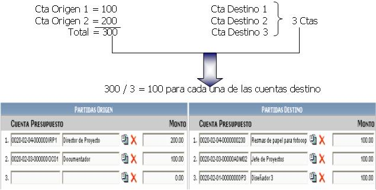
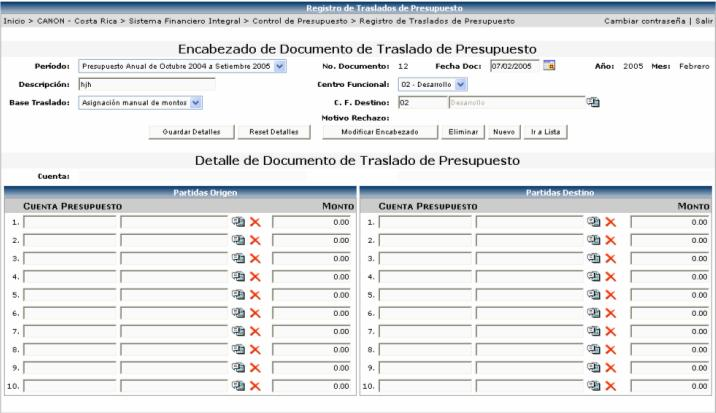
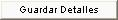

En este proceso se realiza el traslado de presupuesto de un centro funcional a otro, de las cuentas mías, como usuario (las que se definieron en la seguridad por centro funcional, que se explicará más adelante) a otras cuentas mías o a las de cualquier otro centro funcional.
Primero se debe de crear el encabezado del documento de traslado, seleccionando el periodo, la fecha de creación (el sistema sugiere la fecha actual), una descripción, el centro funcional origen (a los que tiene permiso el usuario de trasladar) y el centro funcional destino y la base de traslado a utilizar:
Base de Traslado: es el criterio que se tomará en cuenta para realizar el traslado de presupuesto. Las bases de traslado que se pueden escoger son:
Distribución Equitativa: suma los montos de la partida origen y los divide entre la cantidad de cuentas destino y el resultado se lo asigna a cada una de las cuentas destino, por ejemplo:

Asignación Manual de Montos: suma los montos de la partida origen y se asigna manualmente ese total en la proporción que se desea a cada cuenta destino, por ejemplo:

Asignación por Pesos: es la suma de los montos de la partida origen, dividido entre la suma de los pesos y multiplicado por el valor del peso de cada línea, por ejemplo:

Posterior a la creación del encabezado del documento de traslado, se deberá de crear el detalle de dicho documento:

En dicho detalle se debe de seleccionar cuentas de la partida de Origen para trasladar el monto digitado a las cuentas de partidas destino, según la base de traslado explicada anteriormente.
Si se escoge la base de traslado Asignación
por Pesos, en el detalle aparecerá una columna nueva, en la sección de
Partidas Destino que es la del peso  donde el usuario podrá digitar los pesos para realizar el
cálculo de traslado.
donde el usuario podrá digitar los pesos para realizar el
cálculo de traslado.
Para aplicar el cálculo automático de la base de traslado, se debe de presionar el botón

. Esto en el caso de que la base de traslado seleccionada sea Distribución Equitativa o Asignación por pesos. Para la Asignación Manual de Montos, se tiene que hacer manualmente por el usuario y luego presionar el botón para guardar los cambios.
Cuando el documento esta listo se presiona
el botón  para mandar un correo con la información de que
se esta solicitando una aprobación, a los aprobadores del centro funcional
origen y al usuario que registro el traslado.
para mandar un correo con la información de que
se esta solicitando una aprobación, a los aprobadores del centro funcional
origen y al usuario que registro el traslado.
Al usuario que registra el documento le llegará un correo como el siguiente, informándole quien es el responsable o los responsables de aprobar dicho traslado:

Y al usuario aprobador o a los aprobadores les llegará un correo como el siguiente, informándole quién realizo y a qué centro funcional se esta solicitando el traslado:

Por otro lado si no existen definidos usuarios Aprobadores en el Centro Funcional Aprobador, provoca un error, y no se puede enviar a aprobar el Traslado.